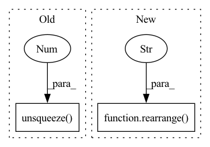

Pattern ID :21762
Before Change
ema_inplace(self.embed_avg, embed_sum.t(), self.decay)
cluster_size = laplace_smoothing(self.cluster_size, self.codebook_size, self.eps) * self.cluster_size.sum()
embed_normalized = self.embed_avg / cluster_size.unsqueeze(1 )
self.embed.data.copy_(embed_normalized)
self.expire_codes_(x)
return quantize, embed_indAfter Change
embed = self.embed if not self.learnable_codebook else self.embed.detach()
embed = rearrange( embed, "... n d -> ... d n" )
dist = -(
(flatten ** 2).sum(dim = -1, keepdim=True)
- 2 * flatten @ embedIn pattern: SUPERPATTERN
Frequency: 4
Non-data size: 2
Instances Fragment ID: 69402354
Project Name: lucidrains/vector-quantize-pytorch
Commit Name: 8716f68d5549f5252d81e45651271f466d639356
Time: 2022-07-30
Author: lucidrains@gmail.com
File Name: vector_quantize_pytorch/vector_quantize_pytorch.py
M Class Name: EuclideanCodebook
N Class Name: EuclideanCodebook
M Method Name: forward(2)
N Method Name: forward(2)
M Parent Class: nn.Module
N Parent Class: nn.Module
M File Name: vector_quantize_pytorch/vector_quantize_pytorch.py
N File Name: vector_quantize_pytorch/vector_quantize_pytorch.py
M Start Line: 223
M End Line: 252
N Start Line: 264
N End Line: 310
Before Change
* torch.arange(n_tokens).unsqueeze(0)).to(x)
positions = self.augment_positions(positions) // B, T
positions = positions.unsqueeze(-1 ) // B, T, 1
product = positions * self.freq // (B, T, 1) * (C) = (B, T, C)
pos_emb = torch.zeros(batch_size, n_tokens, n_feats, device=x.device)After Change
"t -> new_axis t", new_axis=batch_size).to(x)
positions = self.augment_positions(positions)
positions = rearrange( positions, "b t -> b t 1" )
product = positions * self.freq
pos_emb = torch.zeros(batch_size, n_tokens, n_feats, device=x.device)
pos_emb[:, :, 0::2] = torch.sin(product) Fragment ID: 69402355
Project Name: gcambara/cape
Commit Name: 2ad8826eef28ec2c4fbd60965c38f51c51dce6d7
Time: 2021-11-23
Author: guillermocambara@gmail.com
File Name: cape/cape.py
M Class Name: CAPE1d
N Class Name: CAPE1d
M Method Name: forward(2)
N Method Name: forward(2)
M Parent Class: nn.Module
N Parent Class: nn.Module
M File Name: cape/cape.py
N File Name: cape/cape.py
M Start Line: 31
M End Line: 43
N Start Line: 32
N End Line: 44
Before Change
// Note: this is a bit of a hack but we avoid any resampling issues here if we just try 24kHz throughout
// which makes convert_audio a no-op
wav = convert_audio(x, x_sampling_rate, self.model.sample_rate, self.model.channels)
wav = wav.unsqueeze(0 )
// Extract discrete codes from EnCodec
with torch.no_grad():
encoded_frames = self.model.encode(wav)
codes = torch.cat([encoded[0] for encoded in encoded_frames], dim=-1) // [batch, num_quantizers, timesteps]After Change
// convert_audio and unsqueeze. The convert_audio function also doesn"t play nicely with batches.
// b = batch, t = timesteps, 1 channel for the 24kHz model, 2 channels for the 48kHz model
wav = rearrange( x, f"b t -> b {self.model.channels} t" )
// Extract discrete codes from EnCodec
with torch.no_grad():
encoded_frames = self.model.encode(wav) Fragment ID: 69402352
Project Name: lucidrains/audiolm-pytorch
Commit Name: 5268c04547b7dde2d90d4edb5783f11e3233f4f6
Time: 2023-03-30
Author: lwgithub@gmail.com
File Name: audiolm_pytorch/encodec.py
M Class Name: EncodecWrapper
N Class Name: EncodecWrapper
M Method Name: forward(2)
N Method Name: forward(3)
M Parent Class: nn.Module
N Parent Class: nn.Module
M File Name: audiolm_pytorch/encodec.py
N File Name: audiolm_pytorch/encodec.py
M Start Line: 44
M End Line: 52
N Start Line: 51
N End Line: 51
Before Change
embed_sum = flatten.t() @ embed_onehot
self.all_reduce_fn(embed_sum)
embed_normalized = (embed_sum / bins.unsqueeze(0 ) ).t()
embed_normalized = l2norm(embed_normalized)
embed_normalized = torch.where(zero_mask[..., None], embed,
embed_normalized)After Change
embed_normalized = l2norm(embed_normalized)
embed_normalized = torch.where(
rearrange( zero_mask, "... -> ... 1" ) ,
embed,
embed_normalized
) Fragment ID: 69402359
Project Name: lucidrains/vector-quantize-pytorch
Commit Name: 8716f68d5549f5252d81e45651271f466d639356
Time: 2022-07-30
Author: lucidrains@gmail.com
File Name: vector_quantize_pytorch/vector_quantize_pytorch.py
M Class Name: CosineSimCodebook
N Class Name: CosineSimCodebook
M Method Name: forward(2)
N Method Name: forward(2)
M Parent Class: nn.Module
N Parent Class: nn.Module
M File Name: vector_quantize_pytorch/vector_quantize_pytorch.py
N File Name: vector_quantize_pytorch/vector_quantize_pytorch.py
M Start Line: 330
M End Line: 359
N Start Line: 397
N End Line: 448